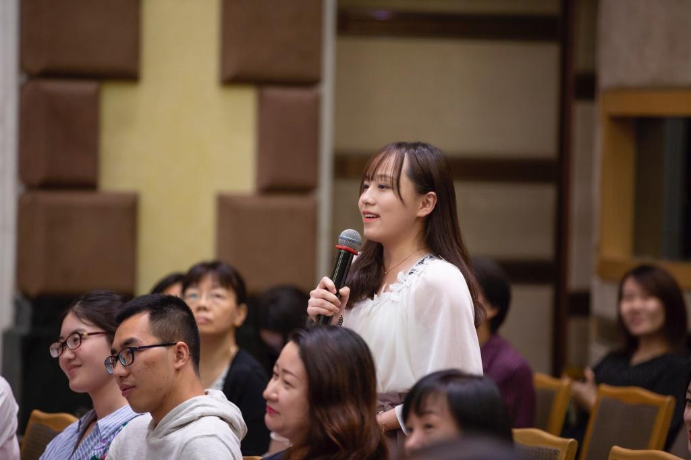

新闻详情
上千名师生参与清华“第一次无偿献血专场 献血人数刷新北京市记录
清华新闻网10月27日电（记者 曲田）10月26日，清华大学第35次教书育人研讨会暨“弘扬爱国奋斗精神、建功立业新时代”报告会在在蒙民伟音乐厅举行。校党委书记陈旭出席并讲话。校党委常委、工会主席王岩主持大会。
本届研讨会暨报告会重点探讨如何在课堂教学中实现价值塑造、能力培养、知识传授“三位一体”的人才培养理念，推动学校教育教学水平进一步提高，把爱国奉献精神融入立德树人的伟大事业，融入建设世界高等教育强国、科技强国的伟大进程，为实现中华民族伟大复兴的中国梦贡献智慧和力量
 陈旭讲话 刘能 摄
陈旭讲话 刘能 摄
陈旭在总结讲话中表示，学校多年来坚持每年召开一次教书育人研讨会，通过研讨交流，教师们深化了对教书育人、立德树人重要性的认识，提升了思想素质和敬业精神，更新了教育理念，强化了业务技能，学校也形成了崇尚教书育人、潜心教书育人的良好氛围，我们要把好做法、好传统坚持下去，推动学校育人工作不断进步。同时，陈旭对现场进行示范课展示的三位全国青教赛获奖教师及其指导教师团队给予充分肯定，代表学校向所有参赛教师及指导教师表示衷心感谢，并向全校在教书育人事业中服务奉献的师生员工致以崇高的敬意。
结合全国教育大会精神，陈旭强调，教书育人是教师的神圣职责，立德树人是学校的根本任务。高校要努力建设一支政治素质过硬、业务能力精湛、育人水平高超的高素质教师队伍。新时代的高校教师要做到坚持教书和育人相统一、坚持言传和身教相统一、坚持潜心问道和关注社会相统一、坚持学术自由和学术规范相统一，要努力做有理想信念、有道德情操、有扎实学识、有仁爱之心的“四有”好老师，要全心做学生锤炼品格、学习知识、创新思维、奉献祖国的“四个引路人”。
陈旭对全体教师提出三点希望：一是提高思想认识，全面贯彻党的教育方针；二是增强育人本领，培养德智体美劳全面发展的拔尖创新人才；三是严格自我要求，涵养高尚的师德师风。陈旭号召清华教师增强“四个意识”，坚定“四个自信”，自觉贯彻党的教育方针，在教书育人的岗位上建功立业，为学校的改革发展，为建设教育强国、办好人民满意的教育作出新的更大贡献。
 学生讲话 刘能 摄文科组一等奖第二名获得者、体育部副教授彭建敏在主题为“减肥与减脂”的课程中，通过生动的语言与身体示范，趣味讲解了减肥的目标、减脂的原理与方法；工科组一等奖第一名获得者、土水学院副教授李威在“混凝土的高温爆裂”课程中，通过鲜活的演示实验、丰富的工程案例，深入浅出地阐释了抗火设计的重要性；思想政治课专项一等奖第一名获得者、马克思主义学院副教授李蕉讲授的课程主题为“一二九之后的青年：从孤军到先锋”。通过大量的史料和历史细节，李蕉层层推进，代入感地还原了时代青年的心路历程，不断引发互动与思考。
 学生提问 刘能 摄
学生提问 刘能 摄
体育部教授赵青、化学系教授薛芳渝、公管学院副教授梅赐琪分别对三位教师的示范课进行了点评。他们纷纷表示，三位教师的课程将教学与科研、实践紧密结合，突出重点、难点和创新点，内容详实，讲授鲜活而生动。在对学生的知识传授和能力培养的过程中，注重将价值塑造融于其中，充分践行了清华“三位一体”的教育理念。
编辑：小宝 审计：菲菲